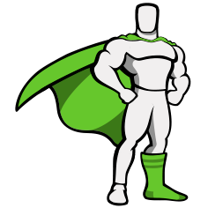
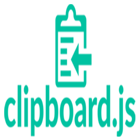

Generador de Contraseñas
Una herramienta para crear contraseñas seguras y personalizadas.
Acerca del Proyecto
Este generador de contraseñas es una aplicación web desarrollada con JavaScript, HTML5 y Tailwind CSS. Permite a los usuarios crear contraseñas seguras y personalizadas, eligiendo la longitud y los tipos de caracteres (mayúsculas, números y símbolos). Además, incluye una función para copiar la contraseña al portapapeles con un solo clic.
Las tecnologías utilizadas en este proyecto son:
 JavaScript
JavaScript
Lógica del generador
 Tailwind CSS
Tailwind CSS
Diseño e interfaz

GSAP
Animaciones

Clipboard API
Copiar al portapapeles